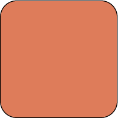

GENERAL INFORMATION
This branded website is publicly available at https://bebold-prj4.github.io/bebold/
This website was created by:
- Maja Branicka (214236)
- Maja Kowalska (211547)
- Diandzhela Mateeva (214008)
- Lorena Rajković (212987)
CONTENT
| # | Student ID | Value | Name and link of content |
|---|---|---|---|
| 1. | 214236 | Action | About |
| 2. | 211547 | Confidence | About |
| 3. | 214008 | Boldness | About |
| 4. | 212987 | Persistence | About |
Persona
Joana comes from Portugal, she is a single young woman with no children. Joana has a Master in Digital Marketing and works in e-commerce. She was recently offered a job in The Netherlands. Joana is an open-minded and outgoing person, she is confident and not afraid to take up a new challenge. She loves going to the cinema, works out 2 times per week and enjoys spending time outdoor. She actively uses Social Media, especially Instagram and Facebook. Joana wants to move to the Netherlands but she does not have any friends there and struggles with finding accommodation on her own. She feels anxious and helpless.
PRODUCTION
Design Elements
BeBold colour scheme

-
 #B10F2E
The dark red color signifies our values of confidence and persistence as it is assosiatned with energy, willpower and courage.
#B10F2E
The dark red color signifies our values of confidence and persistence as it is assosiatned with energy, willpower and courage.
-
 #3243C2
The dark blue is another strong color that stands for power and intelligence, we believe it represents our values of boldness and action.
#3243C2
The dark blue is another strong color that stands for power and intelligence, we believe it represents our values of boldness and action.
-
 #280000
The dark brown color simply matches with our two main strong colors and is used to make our color palette more warm and stable.
#280000
The dark brown color simply matches with our two main strong colors and is used to make our color palette more warm and stable.
-  #DE7C5A The orange/peach color is a supplementary color of our brand. We added it to have one a little bit softer color, which is still quite energetic. With it we want to add more diversity to our brands personality and make it more playful, friendly and distinctive.
Font choices
- Siffon: Since the personality of our Brand is friendly, motivating ,confident, for our logo we decided to use siffon – which is a playful font and fits in well for a logo. It is bold what matches with the brand name.
- Josefin-Sans: We used josefin-sans for headings on our website. It matches well with our logo and is easy to read, what makes makes it relevant to our brand. Its angular, what makes it more masculine. This way it fits with our value of confidence. According to psychology confidence is more masculine.
- Raleway: Raleway is used for the text on our website. We used it, because it is well readable, but doesn’t have a corporate feeling. It is more flat and round, which makes it more distinctive from other fonts typically used for text on websites. It is user friendly.
Altogether our fonts are complementary to each other, however create a nice contrast at the same time. Josefin Sans is more angular and long. While Raleway is more flat and round. Thay are supplemented with Siffon, which is bolder and more playful to grab the attention of the user. Altogether they make a nice combination.
Logo
Since the personality of our Brand is friendly, motivating and confident, for our logo we decided to use font Siffon – which is a simple, but playful font and fits in well for a logo. The main purpose of our brand is to motivate expats struggling with finding friends and settling in a new country. We want to encourage them to take bold moves and not be afraid to express themselves. If you want to meet new friends or just start a new life – it often starts with a conversation. The speak bubble represents the idea of not being afraid of taking a first move and starting a conversation with other people. To create contrast, in our logo we used 2 different colors, as well as 2 different fonts types – the small letters and capital letters.
User interface patterns
The main purpose of our website is to raise awerness about our brand – provide them with a detailed information on what do we do, what do we stand for and how the users can benfit from becoming a part of our brand. On our website we also show a teaser of our product. For this reason we decided to create a simple website, so that it is easy for users to navigate and find necessary information. We also included a lot of visuals and some text – so that the users can get to know our brand better. The UI elements that we used are:
- Navigation bar – we created a simple navigation bar, with links to different pages displayed inline. To make the user experience better, the “active” page that user is on is underlined with a bottom-border. When hovering on the name of the page sections, it gets bolder, so that the user gets more intrigued to click on a different page and knows it is possible. In the mobile-version of our page the navbar is displayed on top with only the home section and a hamburger menu in the right corner. Upon clicking the user can see the rest of the elements. On hover they also get bolder and “active” page is underlined in white.
- Buttons – we used standard buttons with rounded corners. The buttons are blue with white font color – so that they draw attention of a user. On hover the buttons are becoming white, with font becoming blue and border staying blue. They are easy to use and direct the user to different website sections or creating an e-mail.
- Footer – we created a footer at the bottom of the website. The color of the footer matches the color of the navbar, so that the website has clear structure – the beginning and end. In the footer we inclued our contact details. - icons of facebook and instagram, which upon clicking direct the user to the social media platforms. We added our email adress, which upon clicking direct the user to create a new e-mail to us. At bottom we also added links to other sections of the page, so that if the user is at the bottom of the page they don’t have to scroll up to change the page.
- Slideshow – in “OurOffer” page we added a slideshow, which automatically displays the photos of our product. This way the user can clearly see what our product is and become more interested in purchasing it.
- Contact form – in “OurOffer” page, below the information about our product, we included a contact from, so it is easy for the user to send us a message – they don’t have to open their e-mail website, they just have to fill in the form. They have to fill in their name, e-mail and type the message. This way it is easier for them to make a purchase and contact us.
- Pop-up – in “OurOffer” page, after submiting the message in a contact form the pop-up appears, confirming that the message has been sent. This way the user knows that the message they typed reached us and will be more satisfied with our brand and website.
The structure of the navigation and content (e.g. how content units are distributed across pages)
Our webiste consists of 4 pages: Home, About, Our Offer and Corporate. Each page has a navbar on top and footer at the end, which are both in the same color, so that the website has a clear structure. Each page consists of photos/icons, what makes it more visual. When it comes to structure – we put content in 3 different panels: 1) panels in colors different then the background page, with bigger padding and rounded corners, 2) panels in colors different then the background page, with no padding that take up the whole page 3) panels with white background colors. We also use 3 different types of grids – 1 column grid, 2 column grid and 4 column grid. This way content is displayed in different way, what makes the design more interesting. It is also easier for the user to process information – they see things next to each other. The first page that the viewer sees is the “home” page. The purpose of the main page is to give the user an overall idea of what our brand is about and what can we offer them. The first thing visible is our logo – so that the user knows clearly what brand we are, what is our name and what can they associate our brand with. Below there is a call to action encouraging the user to join our community, which is followed by a button, which redirects the user to “ouroffer” page. This way the user can already after visiting the page check the offer of our products. While scrolling through the page, the user can read more about what our brand has to offer and see some visuals representing it. Below, we created a section, which shows our values with the icons representing them, thanks to which the user can get to know what we stand for. Right below there is a button that redirects the user to about page. The “about”’page consists of more detail information about our brand – we start with our mission and vision, so that the users can see clearly what our brands stand for. Below we included the copy texts about our values, that elaborate more on why we have chosen these values. At the bottom of the website we included information about the team behind be bold. “Ouroffer” page starts with a description of what our brand can offer to its customers. Then we desrcibe in detail certain services and add a “call to action” ui elements – button that redirects the user to sen an e-mail to us as well as a contact form that allows the user to apply easily for a discount for our product.
Other units
- How does website design fit the values and personality of the brand?
- How does website design fit the marketing and communication strategy?
Mission of our brand is to encourage the expats to trust in their abilities, take risks and be couragous. Our values are persistence, boldness, confidence and persistence. Our brand personality is friendly, confident and motivating. To represent this personality and values, we decided to create the webiste in red and dark brown colors, which are expressive and bold. We wanted to create contrast to make it more distinctive – that is why buttons are in blue and there are also some other blue elements. We added images that fit the target audience of expats in the Netherlands and represent our values.
The visuals we used on the website match with the visuals on our instagram and facebook. For our instagram and facebook posts we used the same color palette as for the website, we also used the same logos and fonts to create posts for our social media.
Credits
- All credits can be found in the One Drive folder, linked in the Appendix.
Testing Report
The goal of testing our website is to see how our target audience navigates through the website. We want to understand:
- If our design choices are visually attractive to them
- If they have an easy time navigating the website
- If they understand the purpose of our website and what our brand offers
The testing methods:
Participants:
- Gabriela Załęga – expat from Poland, age 27
- Wacław Ruszkiewicz - student in the Netherlands, did it on computer, age 22
- Anna Sasadi - expat and student from Hungary, age 22
- Agata Sidorkiewicz - student, did it on her phone, age 22
- Olga Malinowska - student in the Netherlands, age 22
Setting: All testing sessions have been done in person, at home or on campus.
Protocol: Sessions were recorded with a phone to see both the laptop screen and the facial expressions of the participants. The participants were asked to go over every subpage of the website and meanwhile share their thoughts on how they feel while navigating through it. At the end we asked them what improvements they suggest implementing.
Tasks:
- Find information about the team behind the Brand.
- Find and apply for a special discount code.
- Get to the instagram page of the Brand.
Feedback and questions:
- Did you encounter any difficuties with fulfilling the tasks?
- Did you encounter any other difficulties with the website? Did it load properly?
- How would you rate your user experience? Was the structure of the website clear? Was it easy to navigate?
- How do you overall find the design of the website?
- Do you think the website fulfillis it’s purpose to „raise awerness of the brand BeBold and present it’s products”?
- Is there anything that you would change/do differently?
- Is there anything that you like about the page specifically?
- Any final remarks?
Testing results:
Overall the testing report went well. When it comes to technical qualities – each testing person was able to fullfill the tasks we asked them to do without any difficulties, so it means that the website works well. Most of the users, who were tested on a laptop found the website easy to navigate and could find what they were looking for fast. However, one user which tested the website on her phone said it takes her a while to find the relevant information and that maybe it would be better to include the information about our services higher on the page. Another participants agreed that it might be nice to make the services we offer more visible. A few participants mentioned that the design could be slightly improved – it seemed too simple for them or they didn’t like the size of the images or the images themselves. However, there were also a few that liked the design and wouldn’t change anything about it, so it seemed like a matter of preferences. One participant mentioned that it might be nice to include some more interactive elements. two participants were slightly confused on how the contact form works. Overall the participants said that the purpose of the website matched with the design – it was clear that the purpose of the website was to raise awarness about our brand and show our product.
Positive aspects:
- The website worked fast and participants didn’t have any difficulties with technical qualities
- The website loaded properly
- The website was easy to navigate
- Some participants liked the colors and the design
Negative aspects:
- Contact form was a bit confusing for some of the participants
- Some participants would improve the design
- Our product was to little “visible” on a page – it might be better to put it somewhere higher and write more about it
The changes we would implement are:
- Make our product more “visible” on the page – put the information about the discount higher in “ouroffer” page and maybe provide a call to action and a direct link to it on a main page
- Improve the contact form, cause for some of the participants it was not clear how it works
- Improve the design – add more interesting photos and make the design more distinctive
MARKETING
Context of Campaign and Promotional Activities
Target audience: expats in their 20/30s who came to work and live in the Netherlands.
After conducting several interviews, we found out that the main problems our target group struggle with are: the organizational matters of moving to another country, cultural differences/language barrier and the feeling of loneliness/homesickness. Our interviews admitted that out of these problems the biggest issue is finding the accommodation and dealing with all the documents and organizational matters. They said that the process of becoming an expat might be overwhelming and they all felt at some point that ‘quitting’ on their goals is an easier option.
The purpose of our campaign is to spread a bold and confident mindset among new expats coming to the Netherlands. Our purpose as a brand is to push them to be persistent and act upon their goals even though it might be a struggle. After conducting research on which media channels our target group uses the most we decided to create an Instagram and Facebook page to promote our brand.
Our reach objectives:
- We want to increase brand awareness by creating and posting new content 2 times per week on each platform (Facebook, Instagram).
- We aim to reach at least 500 views on the Facebook fan page and on the Instagram page before April 10th, 2023.
We managed to achieve our main objective (500 people on both Instagram and Facebook) as on Instagram we reached 349 accounts and on Facebook 369 accounts. Combined together the outcome is 718 accounts which is a successful result.
Our response objectives:
- We want to have at least 100 followers on Instagram by April 10th, 2023.
- We want to have at least 100 likes on our Facebook page by April 10th, 2023.
- We want to have at least 100 likes in total on our Instagram posts by April 10th, 2023.
- We want to have at least 100 likes in total on our Facebook posts by April 10th, 2023.
We only managed to reach the objective of 100 likes in total on our Instagram posts. We believe we didn’t succeed with other response objectives because we were not active enough and our post were not engaging enough.
Our affect objective:
- We want our audience to feel confident in accepting new challenges and embracing their fears by April 10th, 2023.
It is not possible to measure if we reached the affect objective but we believe to some extent we managed to spread awareness of our brand so the objective was partly achieved.
Learning Points
What have we learned?
- It is very challenging to promote a new brand without any budget
- It was easier to reach your target audience via Instagram than Facebook as the first platform gives an opportunity to follow your potential clients which is not possible with Facebook
- Number of views of video content has been higher compared to static posts
What worked and what didn’t? What went as expected and what didn’t?
- On Instagram we followed a lot of accounts that relate to the Netherlands and expat communities and some of them followed us back which was a success
- On Instagram we prepared interactive content as quizes or open questions but we didn’t get any responses which was a fail
- On Facebook we barely received any engagement
Future Planning
What would we do differently?
- We would create a Facebook group, try to search for accounts of expats and invite them to join the group. We believe that the group would create a more integrated community and people would be more willing to engage with the content we post.
- We would post every day on both Facebook and Instagram. As a new brand we realized that posting as much as possible is the best solution to spread awareness.
- We would follow even more Instagram accounts of expats and try to connect with them by leaving a comment under their photos or sending a direct message.
What would we do if the campaign would continue?
- We would apply the practices written above.
- We would introduce our product in more detail and promote its advantages.
- We would organize meetings that gather expats together where we offer informative workshops on living in the Netherlands. This type of event would help to promote our brand and gather more clients.